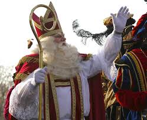
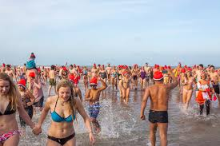
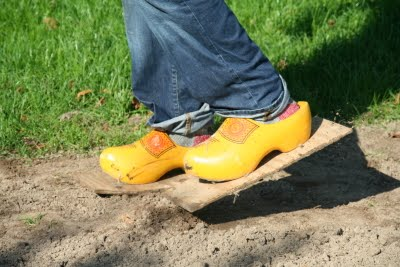

Sinterklaas
The Netherlands celebrates an unique holiday called Sinterklaas. Sinterklaas is where Santa Claus comes from. Sinterklaas is a Turkish Saint, who lives in Madrid. He comes to the Netherlands on his huge boat every year sometime in November. On his boat he brings presents for every kid in the country and all his helpers called Zwarte Pieten. Kids sing songs at night to Sinterklaas, along with leaving letters and food for Sinterklaas' white horse, hoping that Sinterklaas or one of his helpers would bring presents through the chimney. This goes on from the first day Sinterklaas arrives in the country until December 5th, "pakjesavond", which means the night of presents. This is the night that Sinterklaas bangs on every kid's door sometime at night. He then leaves a huge sack of presents for all the kids that have been nice all year and he takes the naughty kids back with him to Madrid.
There has been a lot of controversy around the holiday the last couple of years. That is because Sinterklaas' helpers are black and he himself is white. This looks like he has slaves working form him. People have been very twosided on this issue. Some people say that it's not an issue, its a joyous holiday and the "Black Petes" love giving children presents and candy. Some also say that they get their black skincolor from climbing through chimneys countless times every year, because that is what one of the songs says. Even though that is true, the origin of the Black Pete comes from African slaves. That is obviously very upsetting for a lot of people. White people don't just blackface to dress up as a black pete, but they also put bright lipstick on to make big lips. This fight between the two sides has been going on for a while and the government seems to be divided on the issue as well, so there will most likely not be a perminent solution. A lot of people that want to end the black pete tradition have started the so called "Rainbow Pete" movement. Instead of blackfacing they paint their faces in all different colors. This has ruined the experience for some children, but it seems to satisfy most people who are against black pete. The most obvious solution though is to wipe black paint on the faces that really make it look like they climbed down chimneys.
Herring
One old tradition in the Netherlands is eating herring. But eating herring itself is not a tradition per se. What people in the coast areas and the areas around the lake do is: they bite of a big peace of the actual fish holding the it above your mouth as shown in the picture in the banner. This used to be a very popular tradition for most Dutch people, not including the people living far away from the coast, because you need to eat the herring fresh. Now though, it's not so popular anymore. They say the new generation doesn't enjoy herring much at all. So the tradition only remains in some of the small villages on the coast, where people grow up eating herring.
New Years Dive
A tradition that has become more populare the last couple of years is the new years dive. It's what people do to start off the new year. A mass of people would dive in freezing water, with as little clothing as possible (or allowed), on the first of January. There is no real belief behind the tradition. It's just a fun way for people to kick off the new year. The dive is a massive organized event in a lot of places in the country, but people decide to do their own new years dive wherever they can. Some people even put up a swimming pool in their backyard.
Clogs
Something that foreigners often think about when it comes to the Netherlands is clogs, the yellow wooden shoes that farmers used to wear. This isn't much of a tradition, but because a lot of Dutch people used to actually wear them, every kid growing up will try them on at some point. So although most people will wear them at some point it's not actual used footwear anymore. There still are some farmers that will wear them, but they're pretty rare.